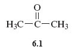
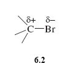

1.1 Reactivity of R-Br
Now consider a reaction of the four molecules shown in Figure 3.
Identify the functional group common to these molecules.
—Br (known as the bromo group).
So the molecules are of the general type, RBr, where R is the framework to which the functional group is attached.
When such bromo compounds are treated with a solution of lithium iodide (LiI) in the solvent propanone (acetone, Structure 6.1), they often undergo a reaction in which the bromo group is replaced by an iodo group (equation 1)

RBr + I− = RI + Br− (1)
What is the role of lithium iodide in the reaction?
It is a source of I- ions.
What happens in this reaction at the molecular level?
As Figure 2 shows, the reactant R—Br contains a carbon-bromine bond, C—Br.
This bond is polar.
Why is the R-Br bond polar? (Hint: think back to what you know about electronegativity)
Bromine is more electronegative than carbon, so the carbon atom in this bond carries a partial positive charge, written δ+, and the bromine atom a partial negative charge, written δ− (Structure 6.2).

Given the polarity of the bond, the negatively charged iodide ion will then tend to approach, and become attached to, the positive carbon. As a carbon-iodine bond is formed, the carbon-bromine bond breaks and a bromide ion is ejected. The reaction is therefore a good illustration of an important point made in Session 5; electronegativity differences often contribute to the reactivity of functional groups.
What is interesting however, is that in this case, the four bromo compounds react at very different speeds.
Figure 3 gives the relative rates of reaction of the four bromo compounds with iodide, what does this tell you?
The rate of reaction decreases from left to right. For example, CH3Br reacts 221 000 times as quickly as (CH3)2CHBr, and the reaction of (CH3)3CBr is so slow that it appears not to take place at all.
In order to find a reasonable explanation for this, take another look at the space-filling depiction of these molecules in Figure 2.
The reaction involves an iodide ion approaching and attaching to the carbon atom that is bound to the bromine atom.
Logically there must be room for this to happen.
There is most room for such an approach on the side of the carbon atom that is opposite to the bulky bromine atom – in other words, according to the direction of view depicted in Figure 3.
Why do you think the reaction with iodide should be easier for CH3Br than for (CH3)3CBr?
In CH3Br, the carbon atom is very exposed to the incoming iodide, because hydrogen atoms are small. But if they are replaced by bulkier methyl groups, this exposure diminishes, until at (CH3)3CBr the carbon atom attached to bromine lies at the bottom of a small cavity created by the three surrounding methyl groups. The iodide cannot reach this carbon atom, so effectively, no reaction occurs.
The “blocking” effect that an organic group produces by virtue of its bulk is described as steric or steric hindrance. This chosen example is a crude one, but it illustrates an important idea.
In the next section you will see how these same ideas can be extended to more complex molecules.
OpenLearn - Discovering chemistry
 Except for third party materials and otherwise, this content is made available under a Creative Commons Attribution-NonCommercial-ShareAlike 4.0 Licence, full copyright detail can be found in the acknowledgements section. Please see full copyright statement for details.
Except for third party materials and otherwise, this content is made available under a Creative Commons Attribution-NonCommercial-ShareAlike 4.0 Licence, full copyright detail can be found in the acknowledgements section. Please see full copyright statement for details.